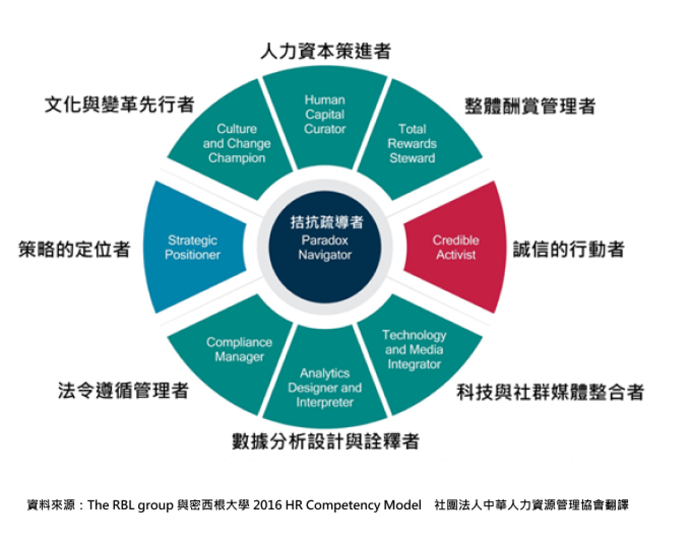

我們知道企業營運發展的過程中，生產、銷售、人資管理、研發、財務與資訊等功能，都是不可或缺的組織與職能，而企業營運的所有過程與系統運作，都需要優質的人才與順暢的組織管理來達成，因此全球頂尖的企業，都有傑出的人力資源管理模式與人資專業團隊。
人力資源部門在企業內建立選才、用才、育才、留才的管理制度與流程，讓直線主管得以在符合法令遵循與系統流程上管理人才，創造組織、客戶與股東價值。隨著資訊科技的日新月異，人資管理專業人員應具備的職能也必須與時俱進，因此人資專業人員要能創造組織價值與永續發展，必須透過轉型，具備人力資本策進、整體酬賞管理、誠信的行動者、整合社群與科技媒體、數據分析設計與詮釋、法令遵循管理、策略定位、文化與變革先行與拮抗疏導者等職能。
大型企業中的人資管理部門，通常會依照招募任用、訓練發展、薪酬福利與員工關係等功能設計組織與分工，專業分工明確；而在中小型企業中，人資管理專業人員就必須身兼不同職務，比較有機會學到平行的人資管理與發展的實務經驗。社會新鮮人進入職場後，會從基礎的人資管理工作開始，隨著工作熟練度與職務輪調的過程，會在企業內逐步成為高級人資專員，或是朝向主管職發展，最終成為企業的人資經理、協理與人資長(CHRO)。
HR助理
行政管理師
能夠在可預計及有規律的情況下，在密切監督及清楚指示下，執行常規性及重複性的工作。
基層HR管理師
能夠在大部分可預計及有規律的情況下，在經常性的監督下，按指導進行需要某些判斷與理解性的工作。
HR管理師 (SSC)
能夠在部分變動及非常規性的情況下，在一般監督下，獨立完成工作。
HR專案主管
資深HR管理師
能夠在經常變動的情況下，在少許監督下， 獨立執行涉及設計規劃且需要熟練技巧的工作。
資深HR部門主管(HRBP)
HR部門主管(HRBP & COE)
能夠在高度複雜變動的情況下，應用整合的專業知識與技術，獨力完成專業與創新的工作。需要具備測卻思考、決策與原創能力。
基礎： 基礎任用、行政管理
初階：
招募與徵選雇用暨引導
招募與徵選雇用暨引導
中、高階：
雇主品牌暨招募策略
人資管理規章
人資專案專案管理
職能管理、績效管理
人資策略規劃
基礎： 基礎訓練
初階： 訓練規劃暨執行
中、高階：
人才發展
人資專案專案管理
職能管理、績效管理
人資策略夥伴
基礎： 勞健保與勞基法
初階： 薪資結算作業
中、高階：
雇主品牌暨招募策略
員工薪酬班
人資專案專案管理
職能管理、績效管理
人資策略規劃
基礎： 勞健保與勞基法
初階：
勞動時事與重要法規解析
勞動基準法解析
中、高階：
勞動法令班
員工關係班
人資專案專案管理
人資策略規劃
持續學習提升專業是人資專業人員所必須具備的能力與特質，在強化專業職能的過程上，建議採取以下步驟：
1. 根據目前從事的人力資源管理工作內容與層次，選擇參加直接相關的學習發展課程。
2. 依照目前從事的人力資源管理工作，選擇參加間接相關的訓練課程，逐步增加人資管理領域內跨專長的職能。
3. 在組織內部爭取工作輪調，根據輪調之後的人力資源管理工作，選擇參加直接相關的訓練課程，然後選擇參加間接相關的訓練課程。
4. 訓練課程或是認證班的學習成效，必須經過思考整理、吸收內化、應用實驗與展現績效的過程，才能達到學訓用合一的目標。